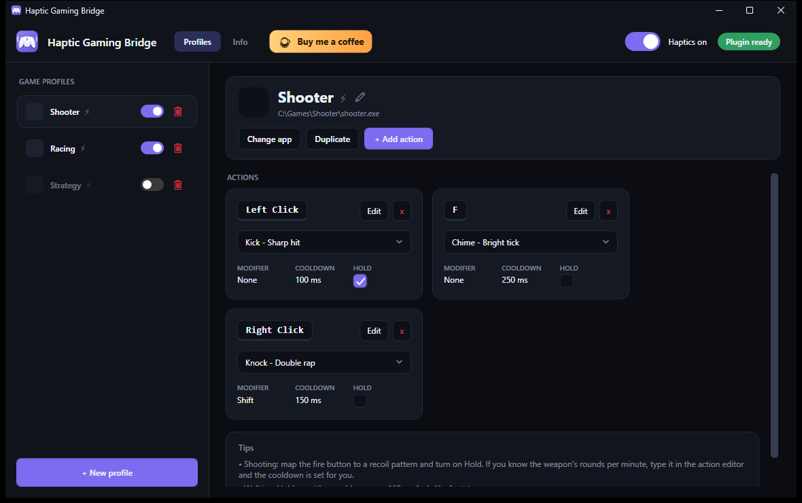
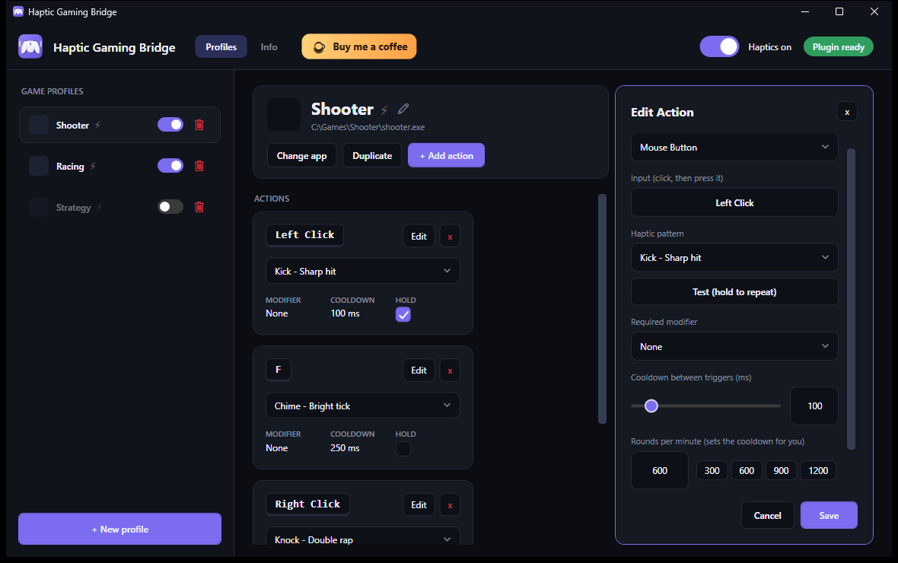

Rumble for your mouse.
Haptic Gaming Bridge makes your Logitech MX Master 4 vibrate when you press the keys and mouse buttons you choose in a game, like the rumble of a game controller. Set it up once per game.
The installer is not code-signed yet, so Windows may warn you before running it. How to check the download.

How it works
A small Windows app watches your keys and mouse buttons and tells a Logi Options+ plugin which vibration to play on the mouse.
Pick a game
Add a profile for a game from the programs you have running, or browse to its .exe.
Map keys to patterns
Choose a key or mouse button, one of eight haptic patterns, and optionally a modifier, a cooldown and “repeat while held”.
Play
Only the profile of the game in the foreground vibrates the mouse. Turn a profile, or everything, on and off at any time.
Match a weapon’s fire rate
Type a weapon’s rounds per minute and the cooldown is set for you: 600 rounds per minute is a 100 ms cooldown. Turn on “repeat while held” and the pulse repeats at that rate while you hold the button.

What you get
Small, focused and under your control.
- Profiles per gameEach game keeps its own mappings. The right one is picked automatically when the game is in the foreground.
- Eight haptic patternsFrom a light tap to a heavy hit, played by the MX Master 4 through Logi Options+. A test button lets you feel each one.
- Modifiers and holdFire a pattern only while Shift, Control, Alt or a mouse button is held, and repeat it while a button stays down.
- Updates you controlThe app can offer new versions and install them after checking their checksum. You can turn it off completely.
- Private by designNo account, no telemetry. The only network use is the optional update check, which sends just the app name and version.
- Free and open sourceMIT licensed, with the source, the build and the tests public on GitHub.
Download
Windows installer for the app. It also installs the Logi Options+ plugin, if you leave that option ticked.
- Version
- Latest release
- Released
- see the release page
- Size
- about 50 MB
- File
HapticGamingBridge-Setup-<version>.exe- License
- MIT, free to use
SHA-256 of the installer
What you need
- Windows 11
- A Logitech MX Master 4
- Logi Options+ 1.95 or later, running
Also available
Why does Windows warn me, and how do I check the download?
The installer is not code-signed yet (code signing for the project is being set up), so Windows SmartScreen may show “Windows protected your PC”. Before you run it you can check that your file is exactly the one published on GitHub by comparing its SHA-256 with the value above, or with the one on the release page.
In PowerShell, from the folder of the download:
Get-FileHash .\HapticGamingBridge-Setup-<version>.exe -Algorithm SHA256The two values must be identical. If you install from this page, the app can later update itself: it only runs an installer from this project’s GitHub releases whose checksum matches the published one.
Questions
Short answers. The full details are in the project’s README on GitHub.
Which mice does it work with?
Only the Logitech MX Master 4, which has the haptic motor. The vibration is played through Logi Options+, so it has to be installed and running.
Does it need an internet connection?
No. The only thing the app does on the network is an optional check for updates (it asks GitHub for the latest release and sends only the app name and version). You can turn it off in the app, under Info → Updates, and then it makes no network connections at all.
What does it do with my keyboard and mouse?
To work it installs a global keyboard and mouse hook, so it can see key presses and mouse buttons. It only compares them with the actions you set up, and does not record, store or send them. Profiles are saved on your PC, in %APPDATA%\HapticGamingBridge.
Does it work with anti-cheat software?
It has not been tested with anti-cheat software. Because it uses a global input hook, check the rules of a competitive game before using it.
Do I need administrator rights?
Not to install: it installs for your user only. A game that runs as administrator hides its input from normal programs, so in that case the app has to run as administrator too.
Can it vibrate continuously like a controller?
No. Logi Options+ offers short, predefined vibration patterns. Each trigger is a short pulse, and the mouse may merge pulses that arrive very close together.
Is this made by Logitech?
No. It is an independent project, not affiliated with or endorsed by Logitech.
Support the project
Haptic Gaming Bridge is free, without ads or tracking. If it made your games feel better, a coffee helps me keep improving it. Totally optional.